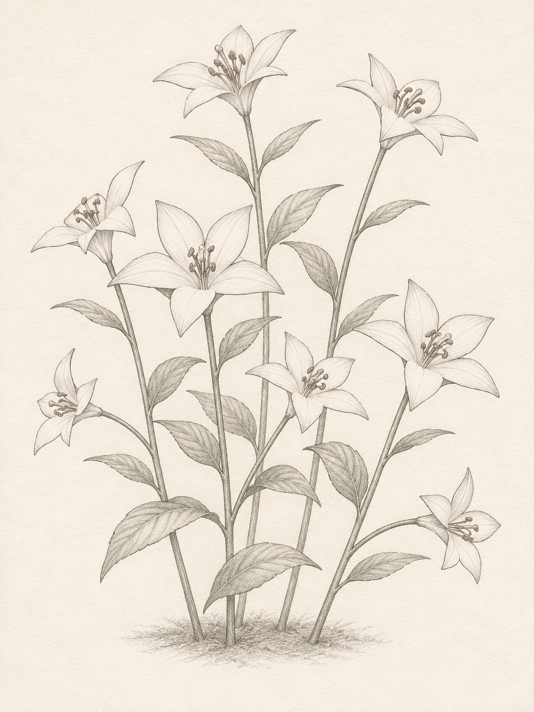
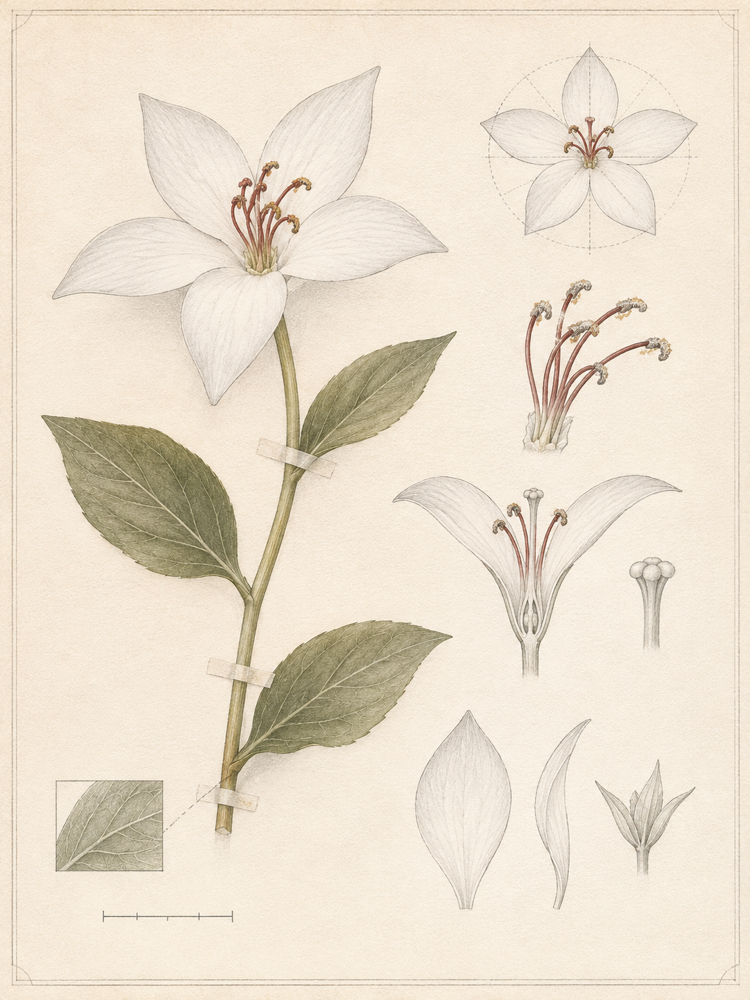
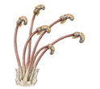
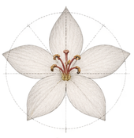

Flora des Forschungsdoms
Botanische Illustrationen – Katalog BOT-001
 BOT-001 – Fachbuchseite · Direkter PNG-Link
BOT-001 – Fachbuchseite · Direkter PNG-Link

BOT-001 – Gesamtansicht · Direkter PNG-Link

BOT-001 – Blütenstudie · Direkter PNG-Link

BOT-001 – Blütendetail 1 · Direkter PNG-Link
BOT-001 – Blütendetail 2 · Direkter PNG-Link

BOT-001 – Blütendetail 3 · Direkter PNG-Link